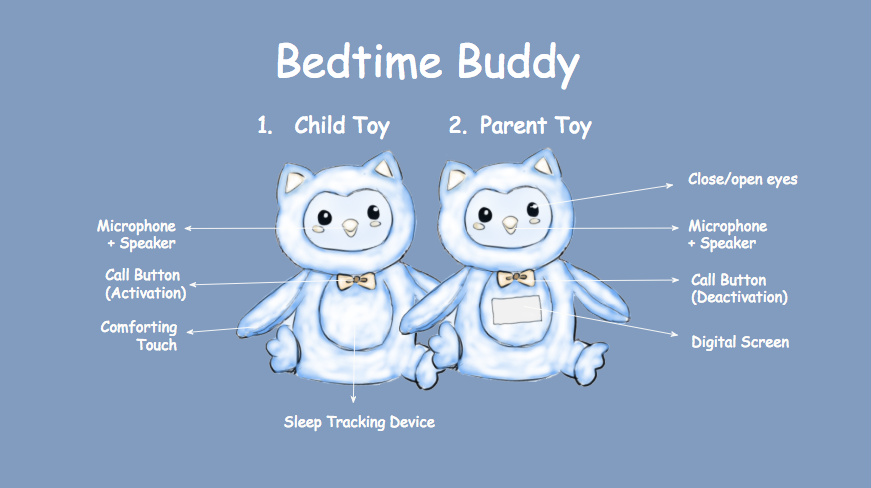
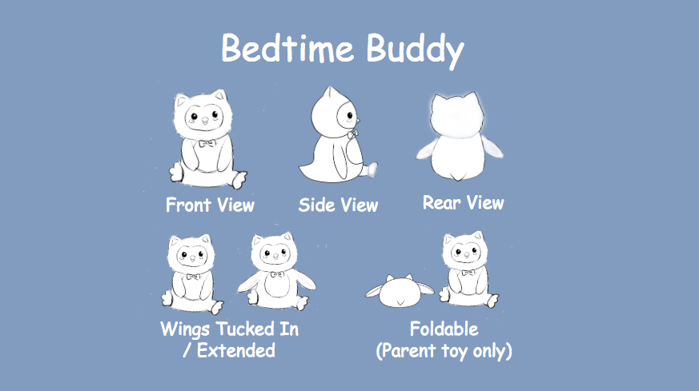
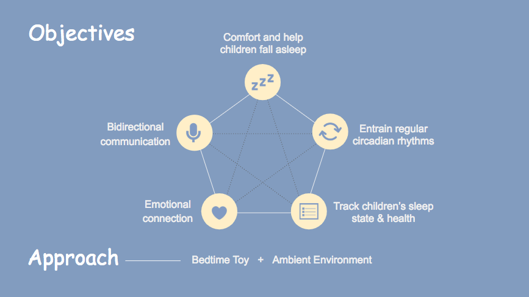
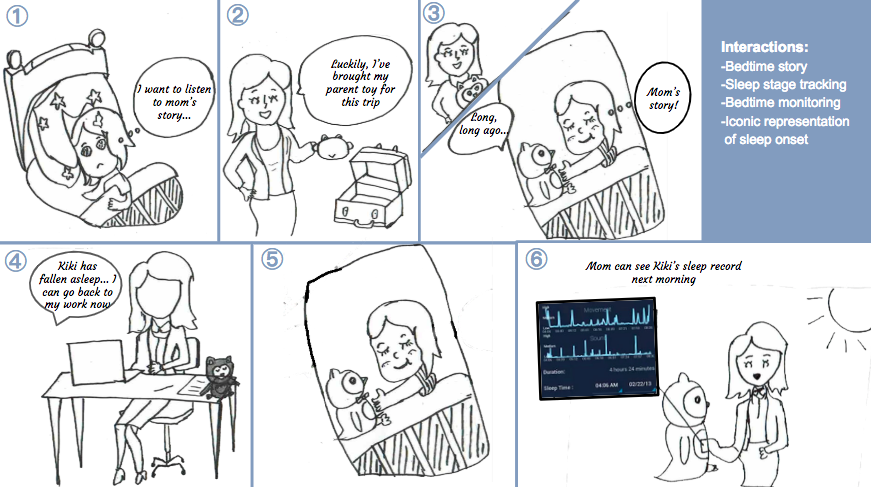
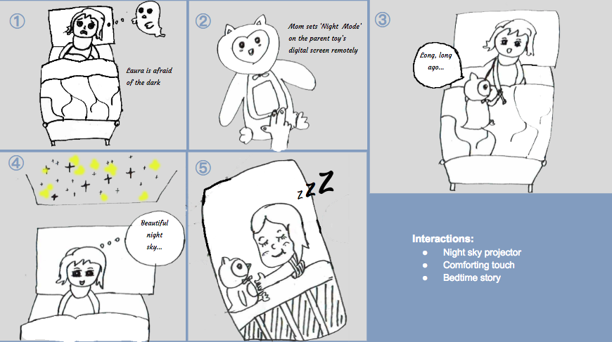

ashten l. bartz
Bedtime Buddy:
A companion for improving children's sleep hygiene
Overview
Sleep is critical to early physical and mental health development in children, and the ramifications of insufficient sleep can manifest themselves during the day through issues with attention, appropriate behavior, normal socialization, emotional regulation, performance at school, and many other domains. Sleep problems in children cited in the literature include a variety of insomnias, such as behavioral insomnia, explained as a child’s refusal to cooperate with a parent’s attempts at putting the child to bed; anxiety-related insomnia, in which sleep-onset is delayed due to worrying; and physiological insomnia, in which physiological causes may underlie delayed sleep onset (Hannan & Hiscock, 2015).
We aim to design a bedtime buddy for children to help address some of the sleep complaints cited above by means of helping them fall asleep more quickly, entrain their circadian rhythms, and exhibit healthy sleep hygiene habits. We will do this by combining an augmented everyday object (the bedtime companion) with ambient media (sensors and digital screens in the bedroom).

PROJECT CONTEXT:
This design was explored as a final project idea for a master's course in tangible user interfaces. We elected to design a pair of interactive toys (one for the child and one for the parent) that would help improve a child's bedtime routine.
MY ROLE:
I contributed to the research and design process with two other classmates, Weijia Zhou and Yunjie Yao.
PROBLEM:
The final project required us to develop a tangible interface through which an interesting interaction could be explored. Our group decided to explore solutions for helping children fall asleep more easily.
PROCESS:
As a group, we conducted literature reviews, hypothesized interaction scenarios, and created sketches and storyboards.
SOLUTION:
After a few rounds of iteration, we realized we were struggling most with creating an interesting and engaging interaction in the problem space we had selected, because preparing a child for bed meant disengaging from stimulating interactions. As such, we decided as a group to pivot and address a different problem space for our final project.
Sketches
The first iteration of our design featured two Bedtime Buddy toys, one for the child and one for the parent. Each toy was designed to look like the same friendly owl so that children would feel the toy belonged to a pair that they shared with their parent, helping to symbolize the parent-child emotional connection.

Each toy had slightly different features to enable various interactions, described below.

The parent toy would look similiar to the child toy, but would be made of a material that allowed it to be folded, increasing portability (such as as if a parent needed to bring it with them on a business trip).
Goals

Features
The features of the child's toy include:
| Child's Toy Features | Description |
|---|---|
| Comforting Touch | Wings that can hug the child or reach out to hold the child’s hand as a manifestation of the parent’s comforting touch |
| Call Button | A button in the bowtie that the child can press to signal that they need something, which will be represented on the parent's toy. Pressing the button will illuminate a small, dim light until the parent responds and deactivates the signal from their Buddy |
| Speaker for Bedtime Story or Relaxing Melody | An embedded speaker system can allow a parent to remotely read a bedtime story, play back a pre-recorded story in the parent’s voice, or iplay a relaxing lullaby at a low volume |
| Microphone for bedroom monitoring | An embedded microphone for allowing communication between Buddies, or for monitoring sounds in the child’s bedroom during the night |
| Sleep Stage Tracking device | An embedded actigraph to record activity levels/movement in bed, giving an indication of sleep consolidation/fragmentation |
The features of the parent's toy include:
| Parent's Toy Features | Description |
|---|---|
| Call Button | An indicator light on the parent’s Buddy’s bowtie will activate, alerting them that the child needs something. They can press the button in the bowtie to deactivate the alert before attending to their child. |
| Microphone for Bedtime Story | An embedded microphone system can allow a parent to remotely read a bedtime story, or they can record a story for future play-back |
| Speaker for bedroom monitoring | An embedded speaker for allowing communication between Buddies, or for monitoring sounds in the child’s bedroom during the night |
| Sleep Stage Tracking & Setting Adjustment Screen | An embedded screen in the Buddy’s stomach to visually reflect trends in the child’s sleep patterns (based on actigraphy), and to allow adjustment of particular bedroom environment settings as needed (e.g., adjust dimming/brightening of lights; deactivate features; etc.) |
| Iconic representation of sleep onset | When the actigraph in the child’s Buddy stops sensing movement activity, suggesting the onset of sleep, the parent’s Buddy will represent this state change by closing its eyes |
Storyboards
We crafted the following storyboards to help envision scenarios in which the Bedtime Buddies might be used.
Bedtime routine when a parent is traveling

① Kiki usually needs her mother to put her to bed, but tonight Mom is travelling for a business trip.
② Mom arrives at her destination and realizes it's time for Kiki to go to bed. She unpacks the foldable parent toy from her suitcase.
③ Mom tells a story remotely through the Bedtime Buddy. Kiki recognizes her Mom’s voice and feels more and more relaxed.
④ When Kiki has fallen asleep, the eyes of the parent toy close, signaling to Mom that she can return to her work.
⑤ Kiki sleeps well.
⑥ Mom can review Kiki’s sleep trends remotely on the parent toy until she returns home from her business trip.
Children afraid of the dark
